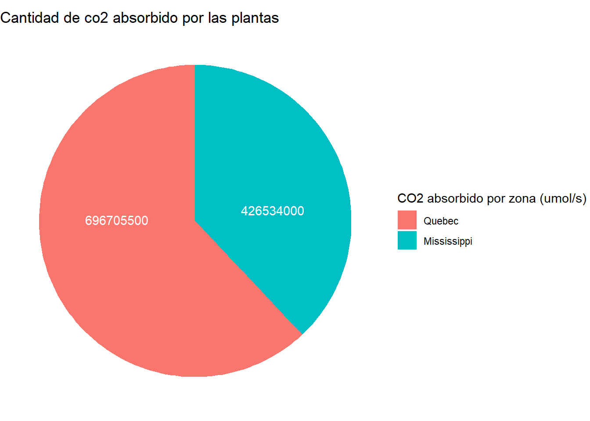

library(tidyverse)
library(plotly)
library(DT)
library(scales)
library(ggthemes)
library(hrbrthemes)
library(ggplot2)Procesograficación
Aplicaciones de GGPLOT Y PLOT en gráficas
Carga de paquetes de librerías
Carga de data necesaria para la graficación
Para la generación de gráficas haremos uso de las librerias de Trees y CO2 de R
data(trees)
data("CO2")Gráficas
Gráfica de dispersión
Para la generación del gráfico de disperción que represneta la relación de altura versus diámetro de los árboles haremos uso dos variables numéricas ( diámetro de los árboles y altura de los árboles)
#Generación de gráfica de dispersión
treesDF <-
trees |>
ggplot(aes(x = trees$Height, y = trees$Girth, color = Height)) +
geom_point(aes(
text = paste0(
"Altura:", Height , "\n",
"Diámetro: ", Girth , "\n"
)
)) +
scale_x_continuous(labels = comma, limits = c(0, 90)) +
scale_y_continuous(labels = comma, limits = c(0, 30)) +
ggtitle("Relación de altura versus diámetro de los árboles") +
xlab("Altura (pulgadas)") +
ylab("Diámetro (pies)") +
labs(caption = "Fuentes: Librería trees de R studio",
color = "Height") +
labs(color = "Girth") +
theme_economist()
# Gráfico plotly
ggplotly(treesDF, tooltip = "text") |>
config(locale = 'es') # para mostrar los controles en españolComentario del gráfico de dispersión
El gráfico de dispersión realizado con data de la librería trees de R studio, muestra la relación existente entre la altura y el diámetro de un árbol. Existe una tendencia que indica que a medida que la altura de un árbol es mayor, el diámetro de este también aumenta.
Histograma
Desarrollo de histograma
El histograma se genera a partir del calculo de la cantidad de biomasa total del árbol. La cantidad de biomasa total de un árbol es representada por Bt, y esta se calcula como:
Bt= VolumenxdixBEFr, donde di es 0,438 Toneladas de Materia Seca/m3 y BEFr es 1,30 para maderas blandas
#Determinación de valores de las variables
di = 0.438
BEFr = 1.30
biomasa_arbolDF <-
trees |>
mutate(biomasaarbol = Volume*BEFr*di)
#Gráfica de histograma
histograma_ggplot2 <-
biomasa_arbolDF |>
ggplot(aes(x = biomasaarbol)) +
geom_histogram(
aes(
text = paste0(
"Biomasa de CO2 absorbido (valor medio del rango): Tn ", round(after_stat(x), 2), "\n",
"Frecuencia: ", after_stat(count)
)
),
bins = 8
) +
scale_x_continuous(labels = comma, limits = c(0, NA)) +
coord_cartesian(ylim = c(0, 15)) +
ggtitle("Distribución de la biomasa del árbol Cherry") +
xlab("Biomasa de árbol (Tn)") +
ylab("Frecuencia") +
labs(subtitle = "Datos de biomasa de árbol expresado en materia seca", caption = "Fuentes: Libreria trees en R") +
theme_economist()
# Histograma plotly
ggplotly(histograma_ggplot2, tooltip = "text") |>
config(locale = 'es')Comentario del histograma
El gráfico se muestra la biomasa total árboles Cherry , para ello se calculó el Bt: biomasa de un árbol , este se calcula de la siguiente manera: Bt= VolumendiBEFr, donde di es 438 tMS/m3 y BEE es1,30 para maderas blandas.
El gráfico nos muestra la frecuencia de los datos según la biomasa del árbol Cherry, Observándose mayores datos (14 datos) para árboles con una biomasa de materia seca promedio de 12.53 Tn.
Gráfico de barras
Desarrollo de gráfico de barras
Para poder generar la gráfica necesitamos hallar la cantidad de Carbono absorbido por las plantas, para ello consideraremos los siguientes datos para las conversiones:
Se sabe que 1mL/L=1000μL/L=1000μmol/m3, y
El resultado final debe expresarse en umol/s de CO2
#Formulamos la ecuación para hallar el co2 absorbido por planta a partir de la concentración de CO2 y uptake
CO2_DF <-
CO2 |>
mutate(co2_absorbido_por_planta = conc*uptake*1000)
#Realizamos la selección de las un dataframe con CO2$Type y co2_absorbido_por_planta
CO2PORTIPO <-
CO2_DF |>
group_by(Type)|>
summarise(sumatoria_absorciónplanta = sum(co2_absorbido_por_planta, na.rm = TRUE))|>
arrange(desc(sumatoria_absorciónplanta))
# Grafica de barras
GRAFICOCO2PORTIPO <-
CO2PORTIPO |>
ggplot(aes(x = Type, y = sumatoria_absorciónplanta)) +
geom_col(
aes(
text = paste0(
"Sumatoria de absorción de CO2 segun zona: ", round(after_stat(y), 2)
)
)
) +
ggtitle("Sumatoria de absorción de CO2 segun zona de estudio") +
xlab("Zona de estudio") +
ylab("Absorción de CO2") +
labs(caption = "Fuente: Libreria CO2 en R") +
theme_economist()
# Gráfico de barras plotly
ggplotly(GRAFICOCO2PORTIPO, tooltip = "text")|>
config(locale = 'es')Comentario del gráfico de barras
El gráfico muestra la absorción de CO2 en umol/s según el origen de las plantas que se han evaluado, para desarrollar esta gráfica se ha realizado la multiplicación de la concentración de dióxido de carbono en el ambiente (mL/L) con el rango de absorción del dióxido de carbono(μmol/m2.seg).
El gráfico demuestra que la absorción fue mayor en las plantas arbustivas de Quebec antes que las de Misisipi.
Gráfico de pastel
Desarrollo de gráfico de pastel
# Gráfico de pastel
grafico_pastel_ggplot2_co2portipo <-
CO2PORTIPO |>
ggplot(aes(x = "", y = sumatoria_absorciónplanta, fill = Type)) +
geom_bar(width = 1, stat = "identity") +
coord_polar(theta = "y") +
geom_text(
aes(label = paste0(CO2PORTIPO$sumatoria_absorciónplanta , "")),
color = "#ffffff",
position = position_stack(vjust = 0.6) # para ajustar la posición del texto en cada porción
) +
labs(title = "Cantidad de co2 absorbido por las plantas",
x = NULL,
y = NULL,
fill = "CO2 absorbido por zona (umol/s) ") +
theme_void()
# Despliegue del gráfico
grafico_pastel_ggplot2_co2portipo
Comentario del gráfico de pastel
El gráfico muestra la absorción de CO2 en umol/s según el origen de las plantas que se han evaluado, para desarrollar esta gráfica se ha realizado la multiplicación de la concentración de dióxido de carbono en el ambiente (mL/L) con el rango de absorción del dióxido de carbono(μmol/m2.seg).
El gráfico demuestra que la absorción fue mayor en las plantas arbustivas de Quebec antes que las de Misisipi.